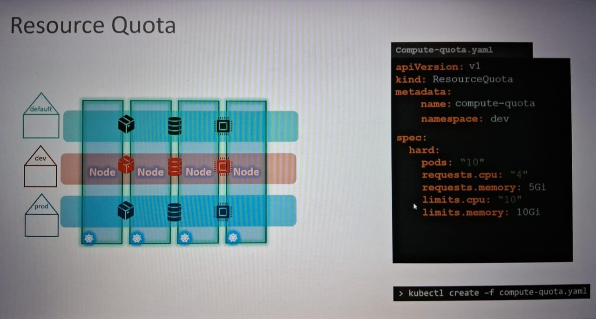
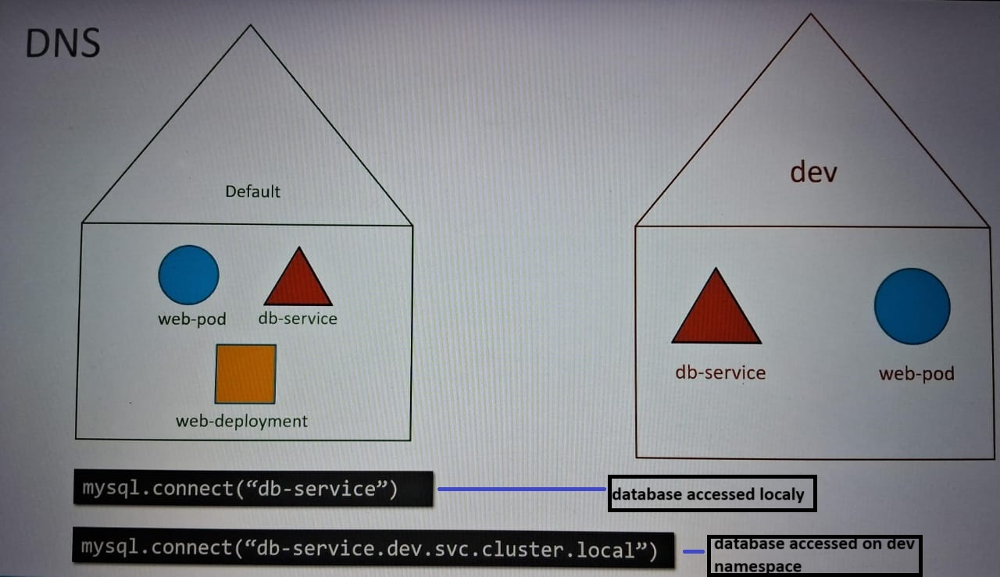
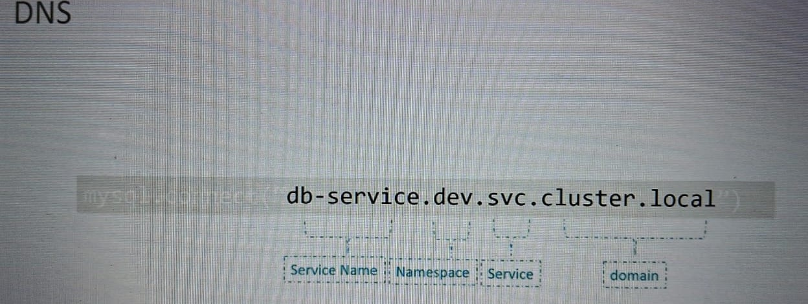
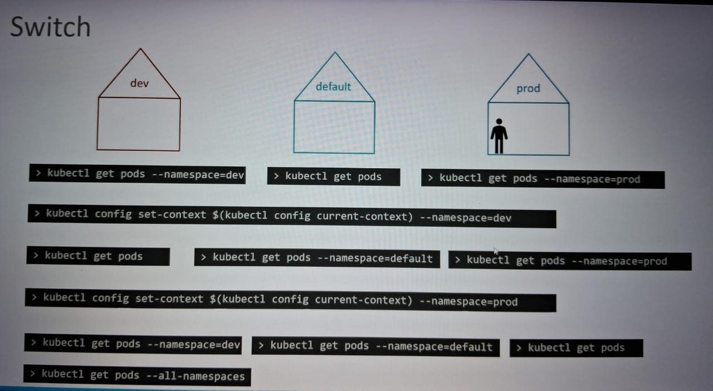

Namespaces
Namespaces is used to isolate the work done.
In Kubernetes, a namespace is a virtual cluster that helps organize, secure, and manage resources within a single cluster:
- Organization: Namespaces can help different teams or projects share a Kubernetes cluster.
- Security:Namespaces can isolate workloads or resources and limit access to specific users.
- Performance:Namespaces can help with performance.
Here are some things to know about namespaces in Kubernetes:
- You can create multiple namespaces in a single Kubernetes cluster.
- Namespaces are logically isolated from each other, but can communicate with each other.
- Users interacting with one namespace do not see the content in another namespace.
- Resource names need to be unique within a namespace, but not across namespaces.
- Namespace-based scoping only applies to namespaced objects, like Deployments and Services.
- Kubernetes automatically creates the default and kube-system namespaces in a new cluster.
- You can create a namespace using a single command or by creating a YAML file and applying it.
- You can view all namespaces with the "kubectl get namespace" command.
- You can define the rules for who can do what in a namespace.
- You can assign quota to namespace so that they can use the resource to certain limit and cannot go beyond quota.

Default namespace :
if suppose the web application wants to access the database server localy and of another name space how it will access see the image below.


Few more commands
